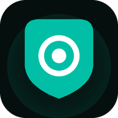

生效日期：2026-11-23 | 最近更新：2026-11-23
本政策适用于 Android 应用 静哨 QuietSentry（包名 com.quietsentry.app）。应用由开源项目 QuietSentry 维护，项目主页为 GitHub 仓库 wangnan05563/QuietSentry。
静哨不提供账号体系、订阅服务或云端中继。你安装应用后，相机端与观看端之间的数据只在你控制的局域网内传输。
这里的“处理”指在设备本地读写，不表示上传到开发者服务器。开发者不接收以下任何内容。
| 数据 | 用途 | 存放位置 | 是否共享 |
|---|---|---|---|
| 视频、照片、事件缩略图 | 值守录制、黑屏拍照、事件回看 | 应用私有目录 files/clips、files/private_gallery | 否 |
| 设备型号、镜头能力、电量/温度状态 | 画质选项、状态页与降载判断 | 仅本机内存/本地状态 | 否 |
| 合法用途确认记录 | 证明你已完成首次合规确认 | 仅本机 | 否 |
| 配对令牌、设备名称、TLS 指纹、审计日志 | 设备配对、撤销授权、安全审计 | 仅本机应用私有目录 | 否 |
| 崩溃日志、广告标识、位置、通讯录、账号 | 不收集 | — | 否 |
应用不申请位置、通讯录、电话、短信权限；WRITE_EXTERNAL_STORAGE 仅在 Android 9 及以下导出到相册时使用。
相机端在本机开启 HTTP 8080 与 HTTPS 8443 服务。默认优先使用 TLS 8443，首次配对会核对设备指纹；除 /api/info 与 /api/pair 外，所有接口都要求配对令牌。观看端输入的 6 位配对码只在本机校验，有效期约 5 分钟，使用后失效。
“手动添加设备”入口按用户填写的地址与端口走 HTTP，属于给端口映射/跨网段场景的兼容路径；该路径为明文传输，需由你确认所在网络可信，或自行用 VPN 覆盖。
静哨不提供云端中继。若你要在家庭网络外访问，需要自行搭建 Tailscale、WireGuard 等 VPN；应用不持有你的组网密钥，也不经开发者服务器转发画面。
第三方集成默认关闭；开启前应用会展示隐私确认。开启后由本机提供 RTSP/ONVIF 服务，使用 Basic 认证，连续失败会临时锁定，并可在 Web 控制台一键踢出会话。是否开启、何时关闭由你决定。
静哨面向成年家庭用户，不以儿童为目标受众，不主动收集儿童个人信息。请勿将设备对准儿童活动区域进行未经授权的拍摄；如用于家庭看护，应由监护人明确同意并遵守当地法律。
应用提供 TLS 传输、配对令牌、应用锁、隐私遮罩、审计日志与远程暂停等保护。但任何本地应用都无法保证绝对安全：设备丢失、系统被 root、局域网被入侵或用户主动选择明文 HTTP 入口，都可能降低保护强度。
建议：使用可信 Wi‑Fi、开启应用锁、定期撤销不再使用的观看端、不要在公网直接暴露 8080/8443 端口；需要远程访问时优先使用 VPN。
如果功能或数据处理方式发生变化，我们会更新本页并同步修改“最近更新”日期；重大变化会在应用内或项目仓库说明。
隐私问题、数据删除协助或安全报告，可通过项目 Issues 联系：github.com/wangnan05563/QuietSentry/issues。请勿在公开 Issue 中粘贴令牌、配对码或含个人画面的截图。
QuietSentry turns a spare Android device into a local-first security camera. We do not operate a cloud service and do not collect, receive, sell, or share your video, audio, event data, or personal information. Recordings are stored in the app's private storage on your own device and are retained for up to 7 days or within 50% of free space.
The app requests camera, microphone, notifications, foreground-service (camera/microphone/dataSync/specialUse), local network, network-state, battery-optimization, boot-completed, and legacy storage permissions only for their stated on-device purposes. LAN streaming uses HTTPS/TLS 8443 with pairing tokens by default; the optional manual HTTP entry is plaintext and should only be used on a trusted network. No account, ads, analytics, or crash-reporting SDK is included. Optional RTSP/ONVIF integration is off by default and requires explicit user consent.
Uninstalling the app deletes its local data. For privacy requests, contact the project via GitHub Issues. Use the app only in locations you own or are authorized to monitor, and comply with local recording laws.